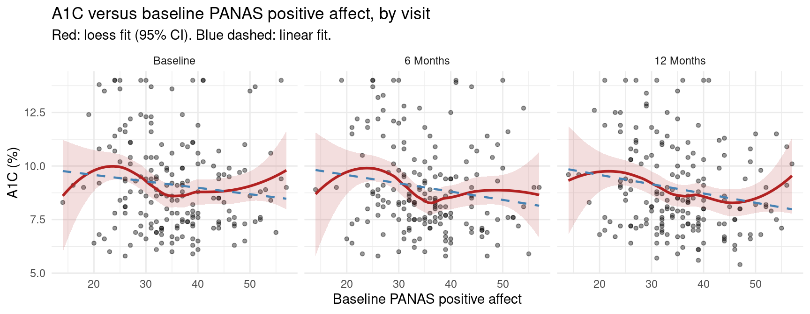
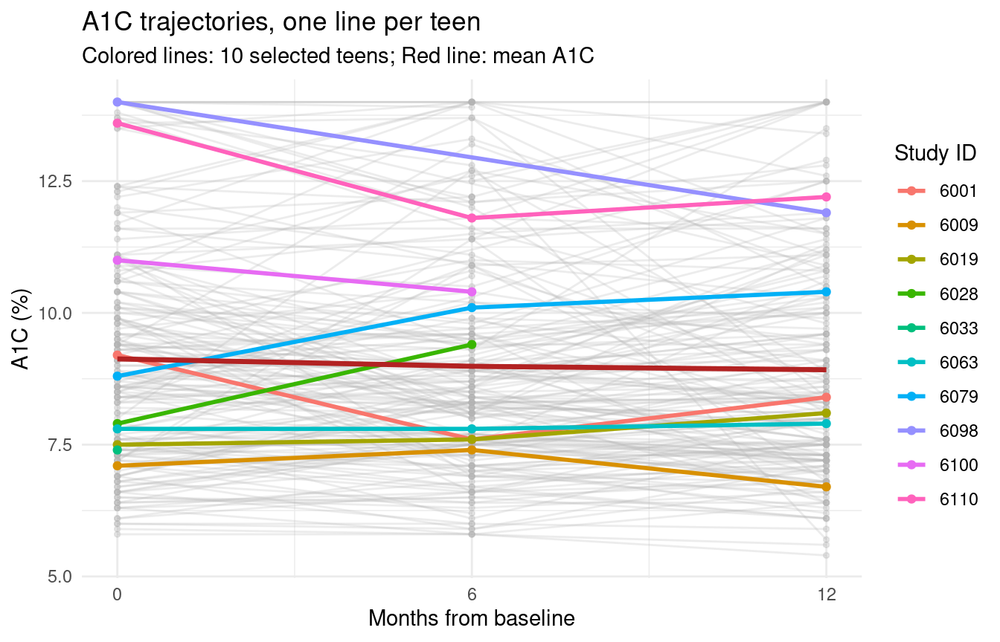

This is a capstone lecture, not a comprehensive treatment of repeated measure analysis
Goal is to apply ideas you already have to a new model
One new model (the linear mixed effects model)
One new inferential tool (cluster-robust standard errors)
Everything else carries over from earlier in the semester
Recall the three assumptions for valid statistical inference about associations
Approximately Normal sampling distribution for the parameter estimates
Independence of observations
Variance assumption about observations within groups (classically homoscedasticity for linear regression, or the appropriate mean-variance realtionship for other logistic, Poisson, ordinal, and time-to-event models)
Today’s setting is one where Assumption 2 is the binding constraint
Observations are correlated within identifiable clusters
The mean structure is unchanged from ordinary regression
What changes is how we account for the within-cluster dependence
2 Why correlated outcomes happen
Several common reasons
Repeated measurements on the same subject over time (longitudinal data)
Repeated observations on the same subject at roughly the same time (paired measurements, multiple specimens)
Sampling within natural clusters (families, schools, hospitals, clinics)
Two observations from the same cluster are typically more alike than two from different clusters
Pretending otherwise overstates the amount of independent information
Standard errors will be wrong
Confidence intervals will not have the stated coverage
\(p\)-values will be wrong
Why might an investigator collect repeated measures data?
Convenience: scientific question is cross-sectional, but easier to measure existing subjects multiple times
Efficiency: repeated measures may decrease variability by letting subjects serve as their own comparison
Scientific necessity: some questions about trajectories or change over time cannot be answered cross-sectionally
The motivating example for this lecture is the third kind, scientific questions about trajectories
3 Motivating example: PANAS positive affect and A1C
Multisite randomized trial of adolescents with type 1 diabetes
Investigators interested in whether baseline positive affect predicts subsequent glycemic control
Positive affect measured by the PANAS (Positive and Negative Affect Schedule) at baseline
A1C measured at baseline, 6 months, and 12 months
About 196 teens with up to three A1C measurements each
Original analysis fit three separate cross-sectional regressions
One regression of A1C on baseline PANAS at each visit
Three slope estimates, three \(p\)-values, three slightly different stories
Paper was rejected on methodological grounds
Reviewers correctly objected that the three A1C values on the same teen are not independent
Right analysis uses all the data jointly while accounting for within-subject correlation
This is exactly an Assumption 2 violation
The rest of this lecture is about how to fix it
Code
d1 <-read_spss("~/projects/peds/jaser/panasbrief/FinalDatasetPANAS for analysis 1.22.25.sav")# Exclude the 2 non-randomized subjectsd2 <- d1[!is.na(d1$intervention_group), ]# Long format: one row per subject-visitd2.long <-rbind( d2 %>%mutate(time =0, a1c = a1c.best), d2 %>%mutate(time =6, a1c = a1c.best.6mo), d2 %>%mutate(time =12, a1c = a1c.best.12mo))d2.long$time.f <-factor(d2.long$time)
3.1 Looking at the data
Code
d2.long %>%filter(!is.na(a1c) &!is.na(panas.teen.pos)) %>%mutate(time.lab =factor(time,levels =c(0, 6, 12),labels =c("Baseline", "6 Months", "12 Months"))) %>%ggplot(aes(x = panas.teen.pos, y = a1c)) +geom_point(alpha =0.4, size =1.2) +geom_smooth(method ="loess", se =TRUE, color ="firebrick",fill ="firebrick", alpha =0.15, linewidth =1) +geom_smooth(method ="lm", se =FALSE, color ="steelblue",linetype ="dashed", linewidth =0.8) +facet_wrap(~ time.lab) +labs(x ="Baseline PANAS positive affect",y ="A1C (%)",title ="A1C versus baseline PANAS positive affect, by visit",subtitle ="Red: loess fit (95% CI). Blue dashed: linear fit.") +theme_minimal()

Plot trajectories before modeling
A spaghetti plot makes the clustering structure visible
Each line is one teen
Lines within a teen are clearly more alike than lines across teens
Red overlay is the marginal (population-average) trajectory
Code
library(dplyr)library(ggplot2)# Pick the first 10 subjectshighlight_ids <- d2.long %>%filter(!is.na(a1c)) %>%distinct(studyid) %>%slice_head(n =10) %>%pull(studyid)d2.long %>%filter(!is.na(a1c)) %>%mutate(highlight =if_else(studyid %in% highlight_ids,as.character(studyid),"Other") ) %>%ggplot(aes(x = time, y = a1c, group = studyid)) +## background subjectsgeom_line(data =~filter(.x, highlight =="Other"),color ="grey70", alpha =0.25 ) +geom_point(data =~filter(.x, highlight =="Other"),color ="grey70", alpha =0.3, size =1 ) +## highlighted subjectsgeom_line(data =~filter(.x, highlight !="Other"),aes(color = highlight),linewidth =1 ) +geom_point(data =~filter(.x, highlight !="Other"),aes(color = highlight),size =1.5 ) +## mean trajectorystat_summary(aes(group =1),fun = mean,geom ="line",color ="firebrick",linewidth =1.2 ) +scale_x_continuous(breaks =c(0, 6, 12)) +labs(x ="Months from baseline",y ="A1C (%)",title ="A1C trajectories, one line per teen",subtitle ="Colored lines: 10 selected teens; Red line: mean A1C" ) +guides(color =guide_legend(title ="Study ID")) +theme_minimal()

4 Revisiting the three assummptions for associations in this setting
Assumption 1: Approximate Normality of \(\hat\beta\)
Comfortable here
About 196 clusters is plenty for the CLT to deliver approximately Normal sampling distributions
Does not depend on Normality of the A1C distribution itself
Assumption 2: Independence of observations
Clearly violated
We know exactly how it is violated (clustering by studyid)
The structure of the violation is also the opportunity
Knowing how observations are dependent is what lets us model it (or robustly account for it)
Assumption 3: Variance structure
Difficult to tell from these plots
Consequence of ignoring clustering
Variance of \(\hat\beta\) is mis-estimated
For between-subject covariates with multiple measurements per subject, naive SEs are typically too small
CIs are too narrow
This is a quantitatively serious mistake, not a rounding issue
5 Three approaches to correlated data
Three broad strategies for analyzing correlated outcomes
Worth knowing all three by name so you can place any future paper into one of these categories
Summary measure approach
Reduce each subject’s measurements to a single number (mean, slope, AUC, change score)
Run an ordinary regression across subjects
Summarized data are independent by construction
Limitations: no time-varying covariates, no within-subject effects, real loss of precision
We will not pursue this for PANAS
Marginal models with robust standard errors
Fit a model for the mean structure you care about
Use a sandwich variance estimator that accounts for clustering
Generalized estimating equations (GEE) are the canonical example
Mean model is the same as you would write down for independent data
Standard errors are what change
Random effects (mixed) models
Add subject-level random effects to the regression
Within-subject correlation is modeled rather than absorbed by the SEs
The linear mixed effects model (LMM) is the continuous-outcome version
These approaches are not mutually exclusive
Common strategy is to fit an LMM for the mean structure and compute cluster-robust SEs on top of it
LMM gives efficiency where the model is right
Sandwich gives protection where the model might not be
This is what the published PANAS analysis does
6 A linear mixed effects model for PANAS and A1C
Treat time as a categorical factor with three levels (baseline, 6 months, 12 months)
Baseline is the reference level
Saturated in time, no parametric shape imposed on the trajectory
Reasonable default with only three visits
A continuous-time specification (linear or quadratic in months) would impose a shape and might be appropriate with more visits
Let \(I_{6,ij}\) and \(I_{12,ij}\) be indicators that subject \(i\)’s visit \(j\) is at 6 or 12 months. The model is
\(Y_{ij}\) is A1C for subject \(i\) at visit \(j\)
\(\text{PANAS}_i\) is baseline positive affect (fixed within subject)
\(b_i \sim N(0, \tau^2)\) is a subject-level random intercept
\(\varepsilon_{ij} \sim N(0, \sigma^2)\) is the within-subject residual
Things to notice (these are all old ideas)
The fixed-effects part is exactly what you would write down for an OLS regression on independent data
A1C is on its native scale (modeling additive changes in mean A1C, not fold changes in a geometric mean)
A1C is clinically interpreted in absolute percentage points
PANAS enters as a single linear term (a first-order trend, the same default we use for any continuous predictor without a scientific reason for curvature)
Time enters as a factor (another modeling choice)
The random intercept \(b_i\) is what acknowledges within-subject correlation (new piece)
Two A1C values from the same teen share the same \(b_i\)
They are more alike than two values from different teens
The induced within-subject correlation is \(\tau^2 / (\tau^2 + \sigma^2)\) (the intraclass correlation)
This is a consequence of the model, not a separate assumption
The PANAS-by-time interaction terms (\(\beta_4\) and \(\beta_5\)) let the slope of A1C on PANAS differ across visits
This is effect modification in the same sense we have used it all semester
“Does the association of PANAS with A1C differ across visits” is structurally the same kind of question as “does treatment work differently in subgroups”
Recovers the question the original cross-sectional analyses were trying to answer
But now estimated jointly from one coherent model that uses all the data
The table above shows robust inference for each model coefficient. The time-specific slopes of A1C on PANAS are linear combinations of these coefficients:
# CR2 robust variance-covariance matrixV <-vcovCR(fit.a1c.cs, type ="CR2")# Point estimates and SEs for each linear combinationest <-as.numeric(K %*%fixef(fit.a1c.cs))se <-sqrt(diag(K %*% V %*%t(K)))# Satterthwaite df via Wald_test (HTZ)K.list <-lapply(1:nrow(K), function(i) K[i, , drop =FALSE])names(K.list) <-rownames(K)wald <-Wald_test(fit.a1c.cs,constraints = K.list,vcov ="CR2",test ="HTZ")df <-sapply(wald, function(x) x$df_denom)t.val <- est / sep.val <-2*pt(-abs(t.val), df = df)slopes.tbl <-data.frame(`Time`=rownames(K),Estimate =round(est, 4),SE =round(se, 4),df =round(df, 1),`Lower 95% CI`=round(est -qt(0.975, df) * se, 4),`Upper 95% CI`=round(est +qt(0.975, df) * se, 4),`p-value`=ifelse(p.val <0.001, "<0.001", round(p.val, 3)),check.names =FALSE)knitr::kable(slopes.tbl, row.names =FALSE)
Table 2: Time-specific slopes of A1C on PANAS positive (robust CR2 inference)
Time
Estimate
SE
df
Lower 95% CI
Upper 95% CI
p-value
Baseline
-0.0292
0.0191
68.8
-0.0674
0.0089
0.131
6 Months
-0.0364
0.0198
69.8
-0.0759
0.0031
0.070
12 Months
-0.0482
0.0171
67.9
-0.0823
-0.0142
0.006
Key finding
In the unadjusted model, the estimated slope of A1C on baseline PANAS positive affect is negative at all three time points, suggesting that higher positive affect at baseline is associated with lower A1C values. The slope represents the expected change in A1C (%-points) for each one-unit increase in baseline PANAS positive score, holding time constant. These estimates should be interpreted cautiously as they do not account for potential confounders such as age, sex, or negative affect.
8.4 A joint test for the overall PANAS effect
Time-specific slopes answer “what is the association at each visit”
A complementary question is “is PANAS associated with A1C at all, anywhere in the model”
Are the PANAS main effect and both PANAS-by-time interaction terms jointly zero?
This is answered by a joint Wald test of those three coefficients together
Same logic as the partial \(F\)-test for sets of coefficients in ordinary regression
Tests a vector of constraints rather than a single coefficient
Only thing that changes here is which variance-covariance matrix we plug in
(The joint test is not easy to obtain if fitting three separate models)
8.5 Scaling for clinical interpretability
A one-unit increase in PANAS positive affect is clinically trivial
In this dataset PANAS positive affect ranges from 15 to 55
One-point change is well below the noise floor of the instrument
A 10-point change is meaningful but not extreme (about a quarter of the observed spread)
Reporting slopes per 10-point increase is standard practice in this literature
Same units-of-the-predictor decision used elsewhere (hazard ratios per decade of age, odds ratios per 10 mg/dL of cholesterol)
Multiply \(\hat\beta\) and its SE by 10
Has no effect on the \(p\)-value
Just relabels the clinical scale on which the effect is reported
9 Side-by-side: unadjusted and adjusted models
Published analysis presents two models in the same table
Unadjusted: PANAS, time, and their interaction only
Adjusted: additionally controls for baseline negative affect, age, and sex as potential confounders
Showing both side by side is the same move used in every multiple regression this semester
Unadjusted estimates describe the marginal association in the data
Adjusted estimates ask whether the association persists after accounting for plausible confounders
Comparison between the two is itself informative
Covariates enter the linear predictor additively
No further interactions with PANAS or time
Same default used throughout the course (effect modification reserved for cases where the science calls for it)
Adjusted model is otherwise a direct extension of the unadjusted one
Same fixed effects for PANAS and time
Same random intercept
Same CR2 inference
Time-specific slopes are still linear combinations of the PANAS and PANAS-by-time coefficients
The additional covariates change the values of those coefficients but not the machinery used to extract slopes from them
9.1 Robust Wald test for overall PANAS positive association (adjusted)
Code
# Identify coefficient indices for PANAS positive termscoef.names.adj <-names(fixef(fit.a1c.adj))panas.idx <-which(grepl("panas.teen.pos", coef.names.adj))Wald_test(fit.a1c.adj,constraints =constrain_zero(panas.idx),vcov ="CR2")
test Fstat df_num df_denom p_val sig
HTZ 2.88 3 64.3 0.0427 *
9.2 Time-specific slopes of A1C on baseline PANAS positive (adjusted)
Code
# Robust coefficient-level testscoef_test(fit.a1c.adj, vcov ="CR2", test ="Satterthwaite")
Table 3: Estimated slope of A1C on baseline PANAS positive at each time point (adjusted)
Table 4: Time-specific slopes of A1C on PANAS positive (adjusted, robust CR2 inference)
Time
Estimate
SE
df
Lower 95% CI
Upper 95% CI
p-value
Baseline
-0.0290
0.0191
61.6
-0.0671
0.0092
0.134
6 Months
-0.0361
0.0196
62.2
-0.0753
0.0031
0.071
12 Months
-0.0481
0.0172
60.9
-0.0825
-0.0137
0.007
Key finding (adjusted)
After adjusting for negative affect (PANAS negative), age, and sex, the time-specific slopes of A1C on baseline PANAS positive affect represent the independent association of positive affect with A1C, beyond what is explained by the covariates. A negative slope indicates that higher baseline positive affect is associated with lower A1C at that time point, controlling for confounders.
9.3 Combined results: unadjusted and adjusted models
Table 5 presents the estimated associations between baseline PANAS positive affect and A1C from linear mixed effects models with a compound symmetry working correlation structure. All inference uses CR2 cluster-robust sandwich standard errors with Satterthwaite degrees of freedom, providing valid inference regardless of whether the assumed covariance structure is correctly specified.
The time-specific slopes of A1C on PANAS positive affect represent the expected change in A1C (%-points) associated with a 10-point increase in baseline PANAS positive score at each assessment period. Because the model includes a time-by-PANAS interaction, the association between PANAS positive and A1C is allowed to differ across the three time points (baseline, 6 months, and 12 months). Each slope is a linear combination of model coefficients: the main effect of PANAS positive at baseline, and the sum of the main effect and the relevant interaction term at 6 and 12 months. The unadjusted model includes only PANAS positive, time, and their interaction. The adjusted model additionally controls for baseline PANAS negative affect, age, and sex.
The PANAS negative affect coefficient in the adjusted model is similarly scaled to a 10-point increase. Age represents the effect of a one-year increase in age at baseline. The Female coefficient represents the mean difference in A1C for females compared to males, holding other covariates constant.
Table 5: Association between baseline PANAS positive affect and A1C — unadjusted and adjusted linear mixed effects models
Unadjusted
Adjusted
Variable
Estimate (95% CI)
p-value
Estimate (95% CI)
p-value
PANAS positive affectᵃ
Baseline
-0.29 (-0.67, 0.09)
0.131
-0.29 (-0.67, 0.09)
0.134
6 Months
-0.36 (-0.76, 0.03)
0.070
-0.36 (-0.75, 0.03)
0.071
12 Months
-0.48 (-0.82, -0.14)
0.006
-0.48 (-0.82, -0.14)
0.007
PANAS negative affectᵇ
—
—
0.10 (-0.19, 0.38)
0.503
Age (years)
—
—
-0.06 (-0.26, 0.14)
0.544
Female
—
—
-0.06 (-0.62, 0.51)
0.842
N (subjects / observations)
194 / 543
194 / 543
ᵃ Per 10-point increase in baseline PANAS positive affect. Time-specific slopes are linear combinations of model coefficients: the main effect at baseline, and the main effect plus the relevant interaction term at 6 and 12 months. ᵇ Per 10-point increase in baseline PANAS negative affect. ᶜ All models use compound symmetry (random intercept) as the working correlation structure. Inference uses CR2 cluster-robust standard errors with Satterthwaite degrees of freedom.
CI = confidence interval. PANAS = Positive and Negative Affect Schedule.
10 Revisiting the main assumptions for associations
Assumption 1 (approximate Normality of \(\hat\beta\))
Still in force
Justified by the CLT over about 196 clusters
Nothing about the move to clustered data weakens this
Assumption 2 (independence, now within identified clusters)
Was the binding constraint
Handled in two complementary ways
Random intercept models the within-subject correlation explicitly
CR2 sandwich provides insurance against any residual misspecification
Assumption 3 (variance structure)
Generalized in two ways
LMM partitions the variance into between-subject (\(\tau^2\)) and within-subject (\(\sigma^2\)) components
CR2 sandwich further relaxes the assumption that the partition is exactly right
Still have three main assumptions for inference about associations
What changed is the menu of tools available for answering them
11 Applicationg of fundamental ideas in a new model
Worth pausing to enumerate every modeling and inferential choice in this analysis that you have already seen earlier in the semester
The point of this lecture is not that you learned a new model
It is that the same set of choices you have been making all semester carried over to a setting with within-subject correlation
11.1 Choices about the mean structure
A1C (outcome) on its native scale
Modeling additive changes in mean A1C (not fold changes in a geometric mean)
A1C is clinically interpreted in absolute percentage points
PANAS (predictor of interest) as a single linear term
First-order trend in the predictor
Default whenever there is no scientific reason to expect curvature
Often most powerful for detecting associations
Time (effect modifier) as a categorical factor
Main reason is the effect modification
With time as a factor, the three time-specific PANAS slopes are estimated independently of each other
With time continuous, the PANAS-by-time interaction would force the PANAS slope to evolve in a parametric way across time (e.g., linearly increasing or decreasing)
We are not borrowing strength across time to presume a flattening or increasing A1C-PANAS slope
This is the conservative default when we have no scientific reason to expect a particular shape for how the association evolves
PANAS-by-time interaction
Effect modification in the same sense used all semester
Adjustment for confounders
Adjusted model adds age, sex, and baseline negative affect as additive linear terms
Same default multiple-regression strategy used throughout the course
Effect modification reserved for cases where the science specifically calls for it
(The study was a RCT, but the analysis here is observational, so confounding is a concern)
11.2 Choices about how to report estimates
Linear combinations of coefficients
Used to extract the slope of A1C on PANAS at each visit
Same machinery used in any earlier regression with an interaction
Scaling by 10
Reporting effects per 10-point increase in PANAS
One-point change is clinically trivial on a scale that runs from 15 to 55
Same units-of-the-predictor decision made elsewhere
11.3 Choices about inference
Approximate Normality of \(\hat\beta\)
Basis for confidence intervals and tests
Justified by sample size, not by Normality of the data
Robust (sandwich) standard errors
Cluster version of the heteroscedasticity-robust SE idea you saw earlier
Joint Wald tests
For “is this predictor associated with the outcome at all”
Same logic as partial \(F\)-tests for sets of coefficients in ordinary regression
11.4 What is genuinely new
The random intercept \(b_i\)
Models within-subject correlation rather than absorbing it into the standard errors
One new piece of machinery in the entire lecture
Adds one variance component to a regression equation you already know how to write down
12 What we did not cover
A focused hour cannot do justice to a topic that occupies entire courses
GEE and marginal models as a fully separate framework
Weaken Assumption 1 even further
Inference justified by a CLT on the estimating equations rather than by Normality of the data
Continuous marginal model with independence working correlation gives the same point estimates as OLS, with cluster-robust SEs
Richer working correlations buy efficiency
Random slopes and other elaborations of the covariance structure
Matter most when subject-specific trajectories vary substantially
Comparing covariance structures (e.g. compound symmetry vs. AR(1) vs. unstructured)
Published analysis did this
Here the choice mattered less for inference once CR2 SEs were in use
Missing data assumptions
Handled here under a missing-at-random assumption with listwise deletion within each model
Extensions to non-continuous outcomes
Every regression model from earlier in the semester has a correlated-data analog built on the same logic
Logistic, ordinal, parametric survival
Random effects become generalized linear mixed models
Marginal approaches become GEE for binary or count data
(And much more)
13 Summary
The reviewers were right
Original cross-sectional analyses gave mis-calibrated inference because they ignored within-subject correlation
The fix was not to learn an entirely new branch of statistics
Apply the same fundamental approach to a design where Assumption 2 was the binding constraint
Use two tools (the LMM and the cluster-robust sandwich) that are direct generalizations of ideas you already had
Robust standard error estimates modify the standard errors, not the estimated slopes
Estimated slopes are the same as if every subject were independent
Appropriate for testing associations because the SEs estimate the sampling variability correctly
Under much weaker assumptions than the parametric model alone requires
14 References
Pustejovsky JE, Tipton E (2018). Small-sample methods for cluster-robust variance estimation and hypothesis testing in fixed effects models. Journal of Business & Economic Statistics 36(4): 672-683.
Lumley T, Diehr P, Emerson S, Chen L (2002). The importance of the normality assumption in large public health data sets. Annual Review of Public Health 23: 151-169.
Source Code
---title: "Correlated Continuous Outcomes"subtitle: "Lecture 14"name: Lec14.CorrelatedContinuous.qmd---```{r setup, include=FALSE}knitr::opts_chunk$set(echo = TRUE, message = FALSE, warning = FALSE)library(haven)library(dplyr)library(tidyr)library(ggplot2)library(lme4)library(clubSandwich)library(knitr)library(kableExtra)```## Overview- This is a capstone lecture, not a comprehensive treatment of repeated measure analysis - Goal is to apply ideas you already have to a new model - One new model (the linear mixed effects model) - One new inferential tool (cluster-robust standard errors) - Everything else carries over from earlier in the semester- Recall the three assumptions for valid statistical inference about associations 1. Approximately Normal sampling distribution for the parameter estimates 2. Independence of observations 3. Variance assumption about observations within groups (classically homoscedasticity for linear regression, or the appropriate mean-variance realtionship for other logistic, Poisson, ordinal, and time-to-event models)- Today's setting is one where Assumption 2 is the binding constraint - Observations are correlated within identifiable clusters - The mean structure is unchanged from ordinary regression - What changes is how we account for the within-cluster dependence## Why correlated outcomes happen- Several common reasons - Repeated measurements on the same subject over time (longitudinal data) - Repeated observations on the same subject at roughly the same time (paired measurements, multiple specimens) - Sampling within natural clusters (families, schools, hospitals, clinics)- Two observations from the same cluster are typically more alike than two from different clusters - Pretending otherwise overstates the amount of independent information - Standard errors will be wrong - Confidence intervals will not have the stated coverage - $p$-values will be wrong- Why might an investigator collect repeated measures data? - Convenience: scientific question is cross-sectional, but easier to measure existing subjects multiple times - Efficiency: repeated measures may decrease variability by letting subjects serve as their own comparison - Scientific necessity: some questions about trajectories or change over time cannot be answered cross-sectionally- The motivating example for this lecture is the third kind, scientific questions about trajectories## Motivating example: PANAS positive affect and A1C- Multisite randomized trial of adolescents with type 1 diabetes - Investigators interested in whether baseline positive affect predicts subsequent glycemic control - Positive affect measured by the PANAS (Positive and Negative Affect Schedule) at baseline - A1C measured at baseline, 6 months, and 12 months - About 196 teens with up to three A1C measurements each- Original analysis fit three separate cross-sectional regressions - One regression of A1C on baseline PANAS at each visit - Three slope estimates, three $p$-values, three slightly different stories- Paper was rejected on methodological grounds - Reviewers correctly objected that the three A1C values on the same teen are not independent - Right analysis uses all the data jointly while accounting for within-subject correlation - This is exactly an Assumption 2 violation- The rest of this lecture is about how to fix it```{r data}#| code-fold: trued1 <- read_spss("~/projects/peds/jaser/panasbrief/FinalDatasetPANAS for analysis 1.22.25.sav")# Exclude the 2 non-randomized subjectsd2 <- d1[!is.na(d1$intervention_group), ]# Long format: one row per subject-visitd2.long <- rbind( d2 %>% mutate(time = 0, a1c = a1c.best), d2 %>% mutate(time = 6, a1c = a1c.best.6mo), d2 %>% mutate(time = 12, a1c = a1c.best.12mo))d2.long$time.f <- factor(d2.long$time)```### Looking at the data```{r scatterplots}#| code-fold: true#| fig-width: 9#| fig-height: 3.5d2.long %>% filter(!is.na(a1c) & !is.na(panas.teen.pos)) %>% mutate(time.lab = factor(time, levels = c(0, 6, 12), labels = c("Baseline", "6 Months", "12 Months"))) %>% ggplot(aes(x = panas.teen.pos, y = a1c)) + geom_point(alpha = 0.4, size = 1.2) + geom_smooth(method = "loess", se = TRUE, color = "firebrick", fill = "firebrick", alpha = 0.15, linewidth = 1) + geom_smooth(method = "lm", se = FALSE, color = "steelblue", linetype = "dashed", linewidth = 0.8) + facet_wrap(~ time.lab) + labs(x = "Baseline PANAS positive affect", y = "A1C (%)", title = "A1C versus baseline PANAS positive affect, by visit", subtitle = "Red: loess fit (95% CI). Blue dashed: linear fit.") + theme_minimal()```- Plot trajectories before modeling- A spaghetti plot makes the clustering structure visible - Each line is one teen - Lines within a teen are clearly more alike than lines across teens - Red overlay is the marginal (population-average) trajectory```{r spaghetti}#| code-fold: true#| fig-width: 7#| fig-height: 4.5library(dplyr)library(ggplot2)# Pick the first 10 subjectshighlight_ids <- d2.long %>% filter(!is.na(a1c)) %>% distinct(studyid) %>% slice_head(n = 10) %>% pull(studyid)d2.long %>% filter(!is.na(a1c)) %>% mutate( highlight = if_else(studyid %in% highlight_ids, as.character(studyid), "Other") ) %>% ggplot(aes(x = time, y = a1c, group = studyid)) + ## background subjects geom_line( data = ~ filter(.x, highlight == "Other"), color = "grey70", alpha = 0.25 ) + geom_point( data = ~ filter(.x, highlight == "Other"), color = "grey70", alpha = 0.3, size = 1 ) + ## highlighted subjects geom_line( data = ~ filter(.x, highlight != "Other"), aes(color = highlight), linewidth = 1 ) + geom_point( data = ~ filter(.x, highlight != "Other"), aes(color = highlight), size = 1.5 ) + ## mean trajectory stat_summary( aes(group = 1), fun = mean, geom = "line", color = "firebrick", linewidth = 1.2 ) + scale_x_continuous(breaks = c(0, 6, 12)) + labs( x = "Months from baseline", y = "A1C (%)", title = "A1C trajectories, one line per teen", subtitle = "Colored lines: 10 selected teens; Red line: mean A1C" ) + guides(color = guide_legend(title = "Study ID")) + theme_minimal()```## Revisiting the three assummptions for associations in this setting- Assumption 1: Approximate Normality of $\hat\beta$ - Comfortable here - About 196 clusters is plenty for the CLT to deliver approximately Normal sampling distributions - Does not depend on Normality of the A1C distribution itself- Assumption 2: Independence of observations - Clearly violated - We know exactly how it is violated (clustering by `studyid`) - The structure of the violation is also the opportunity - Knowing how observations are dependent is what lets us model it (or robustly account for it)- Assumption 3: Variance structure - Difficult to tell from these plots- Consequence of ignoring clustering - Variance of $\hat\beta$ is mis-estimated - For between-subject covariates with multiple measurements per subject, naive SEs are typically too small - CIs are too narrow - This is a quantitatively serious mistake, not a rounding issue## Three approaches to correlated data- Three broad strategies for analyzing correlated outcomes - Worth knowing all three by name so you can place any future paper into one of these categories- Summary measure approach - Reduce each subject's measurements to a single number (mean, slope, AUC, change score) - Run an ordinary regression across subjects - Summarized data are independent by construction - Limitations: no time-varying covariates, no within-subject effects, real loss of precision - We will not pursue this for PANAS- Marginal models with robust standard errors - Fit a model for the mean structure you care about - Use a sandwich variance estimator that accounts for clustering - Generalized estimating equations (GEE) are the canonical example - Mean model is the same as you would write down for independent data - Standard errors are what change- Random effects (mixed) models - Add subject-level random effects to the regression - Within-subject correlation is modeled rather than absorbed by the SEs - The linear mixed effects model (LMM) is the continuous-outcome version- These approaches are not mutually exclusive - Common strategy is to fit an LMM for the mean structure and compute cluster-robust SEs on top of it - LMM gives efficiency where the model is right - Sandwich gives protection where the model might not be - This is what the published PANAS analysis does## A linear mixed effects model for PANAS and A1C- Treat time as a categorical factor with three levels (baseline, 6 months, 12 months) - Baseline is the reference level - Saturated in time, no parametric shape imposed on the trajectory - Reasonable default with only three visits - A continuous-time specification (linear or quadratic in months) would impose a shape and might be appropriate with more visits- Let $I_{6,ij}$ and $I_{12,ij}$ be indicators that subject $i$'s visit $j$ is at 6 or 12 months. The model is$$\begin{aligned}Y_{ij} = \beta_0 \;&+\; \beta_1 \, \text{PANAS}_i \\ &+\; \beta_2 \, I_{6,ij} \;+\; \beta_3 \, I_{12,ij} \\ &+\; \beta_4 \, (\text{PANAS}_i \times I_{6,ij}) \;+\; \beta_5 \, (\text{PANAS}_i \times I_{12,ij}) \\ &+\; b_i + \varepsilon_{ij}\end{aligned}$$- Notation - $Y_{ij}$ is A1C for subject $i$ at visit $j$ - $\text{PANAS}_i$ is baseline positive affect (fixed within subject) - $b_i \sim N(0, \tau^2)$ is a subject-level random intercept - $\varepsilon_{ij} \sim N(0, \sigma^2)$ is the within-subject residual- Things to notice (these are all old ideas) - The fixed-effects part is exactly what you would write down for an OLS regression on independent data - A1C is on its native scale (modeling additive changes in mean A1C, not fold changes in a geometric mean) - A1C is clinically interpreted in absolute percentage points - PANAS enters as a single linear term (a first-order trend, the same default we use for any continuous predictor without a scientific reason for curvature) - Time enters as a factor (another modeling choice)- The random intercept $b_i$ is what acknowledges within-subject correlation (new piece) - Two A1C values from the same teen share the same $b_i$ - They are more alike than two values from different teens - The induced within-subject correlation is $\tau^2 / (\tau^2 + \sigma^2)$ (the intraclass correlation) - This is a consequence of the model, not a separate assumption- The PANAS-by-time interaction terms ($\beta_4$ and $\beta_5$) let the slope of A1C on PANAS differ across visits - This is effect modification in the same sense we have used it all semester - "Does the association of PANAS with A1C differ across visits" is structurally the same kind of question as "does treatment work differently in subgroups" - Recovers the question the original cross-sectional analyses were trying to answer - But now estimated jointly from one coherent model that uses all the data### Fitting the model```{r fit-lmm}fit.a1c.cs <- lmer( a1c ~ panas.teen.pos * time.f + (1 | studyid), data = d2.long, REML = TRUE)summary(fit.a1c.cs)```- Six fixed effects in the unadjusted model - Intercept ($\hat\beta_0$) - PANAS main effect ($\hat\beta_1$) - Two time main effects ($\hat\beta_2$ for 6 months, $\hat\beta_3$ for 12 months) - Two PANAS-by-time interactions ($\hat\beta_4$ and $\hat\beta_5$)- Variance components at the top of the output - $\hat\tau^2$ (subject-level intercept variance) - $\hat\sigma^2$ (residual variance) - ICC = $\hat\tau^2 / (\hat\tau^2 + \hat\sigma^2)$## Time-specific slopes as linear combinations- The slope of A1C on PANAS is not a single number - It depends on the visit because of the interaction - This is a setting we have seen before in ordinary regression with interactions- Slope of A1C on PANAS at each visit - Baseline ($I_6 = I_{12} = 0$): $\hat\beta_1$ - 6 months ($I_6 = 1$): $\hat\beta_1 + \hat\beta_4$ - 12 months ($I_{12} = 1$): $\hat\beta_1 + \hat\beta_5$- Variance of a linear combination - For example, the 6-month slope:$$\textrm{Var}(\hat\beta_1 + \hat\beta_4) =\textrm{Var}(\hat\beta_1) + \textrm{Var}(\hat\beta_4)+ 2\,\text{Cov}(\hat\beta_1, \hat\beta_4)$$- Same general formula we have used all semester for slopes from interaction models - The only thing that changes is which variance-covariance matrix we plug in - In OLS, we used $\sigma^2 (X^\top X)^{-1}$. Here we will use a cluster-robust sandwich matrix instead## A decision point: defend the model's assumptions, or relax assumptions- The LMM gives valid inference *if* its assumptions are correct - Normal random effects - Normal residuals - Correctly specified covariance structure (compound symmetry from the random intercept) - Homoscedastic residuals on the right scale- Two principled responses - Path A: defend the model - Diagnose the random-effect distribution - Check whether a richer covariance structure or random slopes are needed - Refine until you trust the model - Right move when you care about subject-specific predictions or efficiency really matters - Path B: relax assumptions with cluster-robust standard errors - Keep the LMM's mean structure - Compute SEs using a sandwich estimator that does not require the covariance to be correctly specified - Give up some efficiency in exchange for inference under much weaker assumptions- These paths are not exclusive - Common strategy is to layer robust SEs on top of an LMM - This is what the PANAS analysis does- This is the same conceptual move you saw earlier in the semester for heteroscedasticity - There you replaced the OLS variance with a robust, heteroscedasticity-consistent (HC) estimator - Here you replace it with a cluster-robust (CR) sandwich### CR2 with Satterthwaite degrees of freedom- We use the CR2 bias-reduced linearization estimator (Pustejovsky and Tipton, 2018) - Implemented in the `clubSandwich` package - Together with Satterthwaite small-sample degrees of freedom - CR2 is the cluster-robust analog of the robust estimates for heteroscedasticity we have been using - Performs well when the number of clusters is moderate (about 196 teens here) ```{r cr2}ct.unadj <- coef_test(fit.a1c.cs, vcov = "CR2", test = "Satterthwaite")ct.unadj```- Notice that the point estimates are unchanged from the `lmer` output - The sandwich modifies only the standard errors and degrees of freedom - Same property HC-robust SEs have for OLS (same betas, robust SEs)### Computing time-specific slopes with CR2 inference```{r time-slopes-unadj}V.cr2 <- vcovCR(fit.a1c.cs, type = "CR2")b <- fixef(fit.a1c.cs)# Identify coefficient indicesi.panas <- which(names(b) == "panas.teen.pos")i.6mo <- grep("panas.teen.pos:time.f6$", names(b))i.12mo <- grep("panas.teen.pos:time.f12$", names(b))# Build contrast vectors L such that slope = L %*% bL0 <- rep(0, length(b)); L0[i.panas] <- 1L6 <- rep(0, length(b)); L6[i.panas] <- 1; L6[i.6mo] <- 1L12 <- rep(0, length(b)); L12[i.panas] <- 1; L12[i.12mo] <- 1L <- rbind(Baseline = L0, `6 Months` = L6, `12 Months` = L12)est <- as.numeric(L %*% b)se <- sqrt(diag(L %*% V.cr2 %*% t(L)))```- Same structure to the calculation - Slope at each time point is $L\hat\beta$ - Standard error is $\sqrt{LVL'}$ - Same linear combination machinery used for any earlier interaction model - Only thing that changed is the choice of $V$### Time-specific slopes of A1C on baseline PANAS positive```{r}#| label: tbl-a1c-unadj-slopes#| tbl-cap: Estimated slope of A1C on baseline PANAS positive at each time point (unadjusted)# Contrasts for slope at each time point# Model: a1c ~ panas.teen.pos + time.f6 + time.f12 + panas.teen.pos:time.f6 + panas.teen.pos:time.f12# Slope at baseline = beta_panas# Slope at 6mo = beta_panas + beta_panas:time.f6# Slope at 12mo = beta_panas + beta_panas:time.f12K <-rbind("Baseline"=c(0, 1, 0, 0, 0, 0),"6 Months"=c(0, 1, 0, 0, 1, 0),"12 Months"=c(0, 1, 0, 0, 0, 1))# Robust coefficient-level tests (CR2 with Satterthwaite df)coef_test(fit.a1c.cs, vcov ="CR2", test ="Satterthwaite")```The table above shows robust inference for each model coefficient. Thetime-specific slopes of A1C on PANAS are linear combinations of thesecoefficients:- **Baseline**: `panas.teen.pos`- **6 Months**: `panas.teen.pos` + `panas.teen.pos:time.f6`- **12 Months**: `panas.teen.pos` + `panas.teen.pos:time.f12````{r}#| label: tbl-a1c-unadj-slopes-robust#| tbl-cap: Time-specific slopes of A1C on PANAS positive (robust CR2 inference)# CR2 robust variance-covariance matrixV <-vcovCR(fit.a1c.cs, type ="CR2")# Point estimates and SEs for each linear combinationest <-as.numeric(K %*%fixef(fit.a1c.cs))se <-sqrt(diag(K %*% V %*%t(K)))# Satterthwaite df via Wald_test (HTZ)K.list <-lapply(1:nrow(K), function(i) K[i, , drop =FALSE])names(K.list) <-rownames(K)wald <-Wald_test(fit.a1c.cs,constraints = K.list,vcov ="CR2",test ="HTZ")df <-sapply(wald, function(x) x$df_denom)t.val <- est / sep.val <-2*pt(-abs(t.val), df = df)slopes.tbl <-data.frame(`Time`=rownames(K),Estimate =round(est, 4),SE =round(se, 4),df =round(df, 1),`Lower 95% CI`=round(est -qt(0.975, df) * se, 4),`Upper 95% CI`=round(est +qt(0.975, df) * se, 4),`p-value`=ifelse(p.val <0.001, "<0.001", round(p.val, 3)),check.names =FALSE)knitr::kable(slopes.tbl, row.names =FALSE)```::: {.callout-important}## Key findingIn the unadjusted model, the estimated slope of A1C on baseline PANAS positive affect is negative at all three time points, suggesting that higher positive affect at baseline is associated with lower A1C values. The slope represents the expected change in A1C (%-points) for each one-unit increase in baseline PANAS positive score, holding time constant. These estimates should be interpreted cautiously as they do not account for potential confounders such as age, sex, or negative affect.:::### A joint test for the overall PANAS effect- Time-specific slopes answer "what is the association at each visit"- A complementary question is "is PANAS associated with A1C at all, anywhere in the model" - Are the PANAS main effect and both PANAS-by-time interaction terms jointly zero?- This is answered by a joint Wald test of those three coefficients together - Same logic as the partial $F$-test for sets of coefficients in ordinary regression - Tests a vector of constraints rather than a single coefficient - Only thing that changes here is which variance-covariance matrix we plug in- (The joint test is not easy to obtain if fitting three separate models)### Scaling for clinical interpretability- A one-unit increase in PANAS positive affect is clinically trivial- In this dataset PANAS positive affect ranges from 15 to 55 - One-point change is well below the noise floor of the instrument - A 10-point change is meaningful but not extreme (about a quarter of the observed spread)- Reporting slopes per 10-point increase is standard practice in this literature - Same units-of-the-predictor decision used elsewhere (hazard ratios per decade of age, odds ratios per 10 mg/dL of cholesterol) - Multiply $\hat\beta$ and its SE by 10 - Has no effect on the $p$-value - Just relabels the clinical scale on which the effect is reported## Side-by-side: unadjusted and adjusted models- Published analysis presents two models in the same table - Unadjusted: PANAS, time, and their interaction only - Adjusted: additionally controls for baseline negative affect, age, and sex as potential confounders- Showing both side by side is the same move used in every multiple regression this semester - Unadjusted estimates describe the marginal association in the data - Adjusted estimates ask whether the association persists after accounting for plausible confounders - Comparison between the two is itself informative- Covariates enter the linear predictor additively - No further interactions with PANAS or time - Same default used throughout the course (effect modification reserved for cases where the science calls for it)- Adjusted model is otherwise a direct extension of the unadjusted one - Same fixed effects for PANAS and time - Same random intercept - Same CR2 inference - Time-specific slopes are still linear combinations of the PANAS and PANAS-by-time coefficients - The additional covariates change the *values* of those coefficients but not the *machinery* used to extract slopes from them```{r fit-adj}d2.adj <- d2.long %>% filter(!is.na(a1c) & !is.na(panas.teen.pos) & !is.na(panas.teen.neg) & !is.na(age_child) & !is.na(Female))fit.a1c.adj <- lmer( a1c ~ panas.teen.pos * time.f + panas.teen.neg + age_child + Female + (1 | studyid), data = d2.adj, REML = TRUE)ct.adj <- coef_test(fit.a1c.adj, vcov = "CR2", test = "Satterthwaite")```### Robust Wald test for overall PANAS positive association (adjusted)```{r}#| label: a1c-adj-wald# Identify coefficient indices for PANAS positive termscoef.names.adj <-names(fixef(fit.a1c.adj))panas.idx <-which(grepl("panas.teen.pos", coef.names.adj))Wald_test(fit.a1c.adj,constraints =constrain_zero(panas.idx),vcov ="CR2")```### Time-specific slopes of A1C on baseline PANAS positive (adjusted)```{r}#| label: tbl-a1c-adj-slopes#| tbl-cap: Estimated slope of A1C on baseline PANAS positive at each time point (adjusted)# Robust coefficient-level testscoef_test(fit.a1c.adj, vcov ="CR2", test ="Satterthwaite")``````{r}#| label: tbl-a1c-adj-slopes-robust#| tbl-cap: Time-specific slopes of A1C on PANAS positive (adjusted, robust CR2 inference)# Build contrast matrix — need to identify correct positions# Coefficients: (Intercept), panas.teen.pos, time.f6, time.f12,# panas.teen.neg, age_child, Female,# panas.teen.pos:time.f6, panas.teen.pos:time.f12n.coef.adj <-length(fixef(fit.a1c.adj))K.adj <-matrix(0, nrow =3, ncol = n.coef.adj)rownames(K.adj) <-c("Baseline", "6 Months", "12 Months")# panas.teen.pos indexpp.idx <-which(coef.names.adj =="panas.teen.pos")int6.idx <-which(coef.names.adj =="panas.teen.pos:time.f6")int12.idx <-which(coef.names.adj =="panas.teen.pos:time.f12")# Baseline slope = beta_panasK.adj[1, pp.idx] <-1# 6-month slope = beta_panas + beta_panas:time.f6K.adj[2, pp.idx] <-1K.adj[2, int6.idx] <-1# 12-month slope = beta_panas + beta_panas:time.f12K.adj[3, pp.idx] <-1K.adj[3, int12.idx] <-1# CR2 robust variance-covariance matrixV.adj <-vcovCR(fit.a1c.adj, type ="CR2")# Point estimates and SEsest.adj <-as.numeric(K.adj %*%fixef(fit.a1c.adj))se.adj <-sqrt(diag(K.adj %*% V.adj %*%t(K.adj)))# Satterthwaite df via Wald_test (HTZ)K.adj.list <-lapply(1:nrow(K.adj), function(i) K.adj[i, , drop =FALSE])names(K.adj.list) <-rownames(K.adj)wald.adj <-Wald_test(fit.a1c.adj,constraints = K.adj.list,vcov ="CR2",test ="HTZ")df.adj <-sapply(wald.adj, function(x) x$df_denom)t.val.adj <- est.adj / se.adjp.val.adj <-2*pt(-abs(t.val.adj), df = df.adj)slopes.adj.tbl <-data.frame(`Time`=rownames(K.adj),Estimate =round(est.adj, 4),SE =round(se.adj, 4),df =round(df.adj, 1),`Lower 95% CI`=round(est.adj -qt(0.975, df.adj) * se.adj, 4),`Upper 95% CI`=round(est.adj +qt(0.975, df.adj) * se.adj, 4),`p-value`=ifelse(p.val.adj <0.001, "<0.001", round(p.val.adj, 3)),check.names =FALSE)knitr::kable(slopes.adj.tbl, row.names =FALSE)```::: {.callout-important}## Key finding (adjusted)After adjusting for negative affect (PANAS negative), age, and sex, the time-specific slopes of A1C on baseline PANAS positive affect represent the independent association of positive affect with A1C, beyond what is explained by the covariates. A negative slope indicates that higher baseline positive affect is associated with lower A1C at that time point, controlling for confounders.:::### Combined results: unadjusted and adjusted models@tbl-a1c-combined presents the estimated associations between baseline PANASpositive affect and A1C from linear mixed effects models with a compoundsymmetry working correlation structure. All inference uses CR2 cluster-robustsandwich standard errors with Satterthwaite degrees of freedom, providing validinference regardless of whether the assumed covariance structure is correctlyspecified.The time-specific slopes of A1C on PANAS positive affect represent the expectedchange in A1C (%-points) associated with a 10-point increase in baseline PANASpositive score at each assessment period. Because the model includes atime-by-PANAS interaction, the association between PANAS positive and A1C isallowed to differ across the three time points (baseline, 6 months, and 12months). Each slope is a linear combination of model coefficients: the maineffect of PANAS positive at baseline, and the sum of the main effect and therelevant interaction term at 6 and 12 months. The unadjusted model includesonly PANAS positive, time, and their interaction. The adjusted modeladditionally controls for baseline PANAS negative affect, age, and sex.The PANAS negative affect coefficient in the adjusted model is similarly scaledto a 10-point increase. Age represents the effect of a one-year increase in ageat baseline. The Female coefficient represents the mean difference in A1C forfemales compared to males, holding other covariates constant.```{r}#| label: tbl-a1c-combined#| tbl-cap: Association between baseline PANAS positive affect and A1C — unadjusted and adjusted linear mixed effects modelslibrary(kableExtra)n.subj.unadj <-length(unique(d2.long$studyid[!is.na(d2.long$a1c) &!is.na(d2.long$panas.teen.pos)]))n.subj.adj <-length(unique(d2.adj$studyid))n.unadj <- d2.long %>%filter(!is.na(a1c) &!is.na(panas.teen.pos)) %>%group_by(time.f) %>%summarise(n_unadj =n(), .groups ="drop")n.adj <- d2.adj %>%group_by(time.f) %>%summarise(n_adj =n(), .groups ="drop")# --- Helper to format estimate (95% CI) ---fmt_est <-function(est, lo, hi) {paste0(sprintf("%.2f", est), " (", sprintf("%.2f", lo), ", ", sprintf("%.2f", hi), ")")}fmt_p <-function(p) {ifelse(p <0.001, "<0.001", sprintf("%.3f", p))}# Scaling factor for PANAS variablespanas.scale <-10# ============================================================# UNADJUSTED: time-specific slopes (already computed: est, se, df from K)# Scale slopes by 10# ============================================================est.unadj.s <- est * panas.scalese.unadj.s <- se * panas.scalelo.unadj <- est.unadj.s -qt(0.975, df) * se.unadj.shi.unadj <- est.unadj.s +qt(0.975, df) * se.unadj.st.unadj <- est.unadj.s / se.unadj.sp.unadj <-2*pt(-abs(t.unadj), df = df)unadj.rows <-data.frame(Variable =paste0("\u00a0\u00a0\u00a0", c("Baseline", "6 Months", "12 Months")),Unadj =fmt_est(est.unadj.s, lo.unadj, hi.unadj),Unadj_p =fmt_p(p.unadj),stringsAsFactors =FALSE)# ============================================================# ADJUSTED: time-specific slopes (already computed: est.adj, se.adj, df.adj)# Scale slopes by 10# ============================================================est.adj.s <- est.adj * panas.scalese.adj.s <- se.adj * panas.scalelo.adj <- est.adj.s -qt(0.975, df.adj) * se.adj.shi.adj <- est.adj.s +qt(0.975, df.adj) * se.adj.st.adj.s <- est.adj.s / se.adj.sp.adj.s <-2*pt(-abs(t.adj.s), df = df.adj)adj.slope.rows <-data.frame(Variable =paste0("\u00a0\u00a0\u00a0", c("Baseline", "6 Months", "12 Months")),Adj =fmt_est(est.adj.s, lo.adj, hi.adj),Adj_p =fmt_p(p.adj.s),stringsAsFactors =FALSE)# ============================================================# ADJUSTED: covariate coefficients from coef_test# ============================================================ct.adj <-coef_test(fit.a1c.adj, vcov ="CR2", test ="Satterthwaite")# Identify the degrees-of-freedom column (name varies across clubSandwich versions)df.col <-grep("df", names(ct.adj), value =TRUE)[1]# Extract PANAS negative (scale by 10), age_child, Femalecov.names <-c("panas.teen.neg", "age_child", "Female")cov.labels <-c("PANAS negative affect\u1D47", "Age (years)", "Female")cov.rows.adj <-data.frame(Variable =character(), Adj =character(), Adj_p =character(),stringsAsFactors =FALSE)for (i inseq_along(cov.names)) { idx <-which(rownames(ct.adj) == cov.names[i]) b <-as.numeric(ct.adj[idx, "beta"]) s <-as.numeric(ct.adj[idx, "SE"]) d <-as.numeric(ct.adj[idx, df.col])# Scale PANAS negative by 10if (cov.names[i] =="panas.teen.neg") { b <- b * panas.scale s <- s * panas.scale } lo.c <- b -qt(0.975, d) * s hi.c <- b +qt(0.975, d) * s p.c <-2*pt(-abs(b / s), df = d) cov.rows.adj <-rbind(cov.rows.adj, data.frame(Variable = cov.labels[i],Adj =fmt_est(b, lo.c, hi.c),Adj_p =fmt_p(p.c),stringsAsFactors =FALSE ))}# ============================================================# Assemble the full table# ============================================================# Header row for PANAS positive slopeshdr.panas <-data.frame(Variable ="PANAS positive affect\u1D43",Unadj ="", Unadj_p ="", Adj ="", Adj_p ="",stringsAsFactors =FALSE)# Slope rows — merge unadjusted and adjustedslope.combined <-data.frame(Variable = unadj.rows$Variable,Unadj = unadj.rows$Unadj,Unadj_p = unadj.rows$Unadj_p,Adj = adj.slope.rows$Adj,Adj_p = adj.slope.rows$Adj_p,stringsAsFactors =FALSE)# Covariate rows (unadjusted columns are "—")cov.combined <-data.frame(Variable = cov.rows.adj$Variable,Unadj ="\u2014",Unadj_p ="\u2014",Adj = cov.rows.adj$Adj,Adj_p = cov.rows.adj$Adj_p,stringsAsFactors =FALSE)# Sample size rown.row <-data.frame(Variable ="N (subjects / observations)",Unadj =paste0(n.subj.unadj, " / ", sum(n.unadj$n_unadj)),Unadj_p ="",Adj =paste0(n.subj.adj, " / ", sum(n.adj$n_adj)),Adj_p ="",stringsAsFactors =FALSE)tbl.final <-rbind(hdr.panas, slope.combined, cov.combined, n.row)names(tbl.final) <-c("Variable", "Estimate (95% CI)", "p-value","Estimate (95% CI) ", "p-value ")kbl(tbl.final, row.names =FALSE, escape =FALSE, align =c("l", "c", "c", "c", "c")) %>%kable_styling(bootstrap_options =c("striped", "condensed"), full_width =FALSE) %>%add_header_above(c(" "=1, "Unadjusted"=2, "Adjusted"=2))```::: {.table-notes}*ᵃ* Per 10-point increase in baseline PANAS positive affect. Time-specific slopes are linear combinations of model coefficients: the main effect at baseline, and the main effect plus the relevant interaction term at 6 and 12 months.\*ᵇ* Per 10-point increase in baseline PANAS negative affect.\*ᶜ* All models use compound symmetry (random intercept) as the working correlation structure. Inference uses CR2 cluster-robust standard errors with Satterthwaite degrees of freedom.\CI = confidence interval. PANAS = Positive and Negative Affect Schedule.:::## Revisiting the main assumptions for associations- Assumption 1 (approximate Normality of $\hat\beta$) - Still in force - Justified by the CLT over about 196 clusters - Nothing about the move to clustered data weakens this- Assumption 2 (independence, now within identified clusters) - Was the binding constraint - Handled in two complementary ways - Random intercept models the within-subject correlation explicitly - CR2 sandwich provides insurance against any residual misspecification- Assumption 3 (variance structure) - Generalized in two ways - LMM partitions the variance into between-subject ($\tau^2$) and within-subject ($\sigma^2$) components - CR2 sandwich further relaxes the assumption that the partition is exactly right- Still have three main assumptions for inference about associations - What changed is the menu of tools available for answering them## Applicationg of fundamental ideas in a new model- Worth pausing to enumerate every modeling and inferential choice in this analysis that you have already seen earlier in the semester- The point of this lecture is not that you learned a new model - It is that the same set of choices you have been making all semester carried over to a setting with within-subject correlation### Choices about the mean structure- A1C (outcome) on its native scale - Modeling additive changes in mean A1C (not fold changes in a geometric mean) - A1C is clinically interpreted in absolute percentage points- PANAS (predictor of interest) as a single linear term - First-order trend in the predictor - Default whenever there is no scientific reason to expect curvature - Often most powerful for detecting associations- Time (effect modifier) as a categorical factor - Main reason is the effect modification - With time as a factor, the three time-specific PANAS slopes are estimated independently of each other - With time continuous, the PANAS-by-time interaction would force the PANAS slope to evolve in a parametric way across time (e.g., linearly increasing or decreasing) - We are not borrowing strength across time to presume a flattening or increasing A1C-PANAS slope - This is the conservative default when we have no scientific reason to expect a particular shape for how the association evolves - PANAS-by-time interaction - Effect modification in the same sense used all semester- Adjustment for confounders - Adjusted model adds age, sex, and baseline negative affect as additive linear terms - Same default multiple-regression strategy used throughout the course - Effect modification reserved for cases where the science specifically calls for it - (The study was a RCT, but the analysis here is observational, so confounding is a concern)### Choices about how to report estimates- Linear combinations of coefficients - Used to extract the slope of A1C on PANAS at each visit - Same machinery used in any earlier regression with an interaction- Scaling by 10 - Reporting effects per 10-point increase in PANAS - One-point change is clinically trivial on a scale that runs from 15 to 55 - Same units-of-the-predictor decision made elsewhere### Choices about inference- Approximate Normality of $\hat\beta$ - Basis for confidence intervals and tests - Justified by sample size, not by Normality of the data- Robust (sandwich) standard errors - Cluster version of the heteroscedasticity-robust SE idea you saw earlier- Joint Wald tests - For "is this predictor associated with the outcome at all" - Same logic as partial $F$-tests for sets of coefficients in ordinary regression### What is genuinely new- The random intercept $b_i$ - Models within-subject correlation rather than absorbing it into the standard errors - One new piece of machinery in the entire lecture - Adds one variance component to a regression equation you already know how to write down## What we did not cover- A focused hour cannot do justice to a topic that occupies entire courses- GEE and marginal models as a fully separate framework - Weaken Assumption 1 even further - Inference justified by a CLT on the estimating equations rather than by Normality of the data - Continuous marginal model with independence working correlation gives the same point estimates as OLS, with cluster-robust SEs - Richer working correlations buy efficiency- Random slopes and other elaborations of the covariance structure - Matter most when subject-specific trajectories vary substantially- Comparing covariance structures (e.g. compound symmetry vs. AR(1) vs. unstructured) - Published analysis did this - Here the choice mattered less for inference once CR2 SEs were in use- Missing data assumptions - Handled here under a missing-at-random assumption with listwise deletion within each model- Extensions to non-continuous outcomes - Every regression model from earlier in the semester has a correlated-data analog built on the same logic - Logistic, ordinal, parametric survival - Random effects become generalized linear mixed models - Marginal approaches become GEE for binary or count data- (And much more)## Summary- The reviewers were right - Original cross-sectional analyses gave mis-calibrated inference because they ignored within-subject correlation- The fix was not to learn an entirely new branch of statistics - Apply the same fundamental approach to a design where Assumption 2 was the binding constraint - Use two tools (the LMM and the cluster-robust sandwich) that are direct generalizations of ideas you already had- Robust standard error estimates modify the standard errors, not the estimated slopes - Estimated slopes are the same as if every subject were independent - Appropriate for testing associations because the SEs estimate the sampling variability correctly - Under much weaker assumptions than the parametric model alone requires## References- Pustejovsky JE, Tipton E (2018). Small-sample methods for cluster-robust variance estimation and hypothesis testing in fixed effects models. *Journal of Business & Economic Statistics* 36(4): 672-683.- Lumley T, Diehr P, Emerson S, Chen L (2002). The importance of the normality assumption in large public health data sets. *Annual Review of Public Health* 23: 151-169.